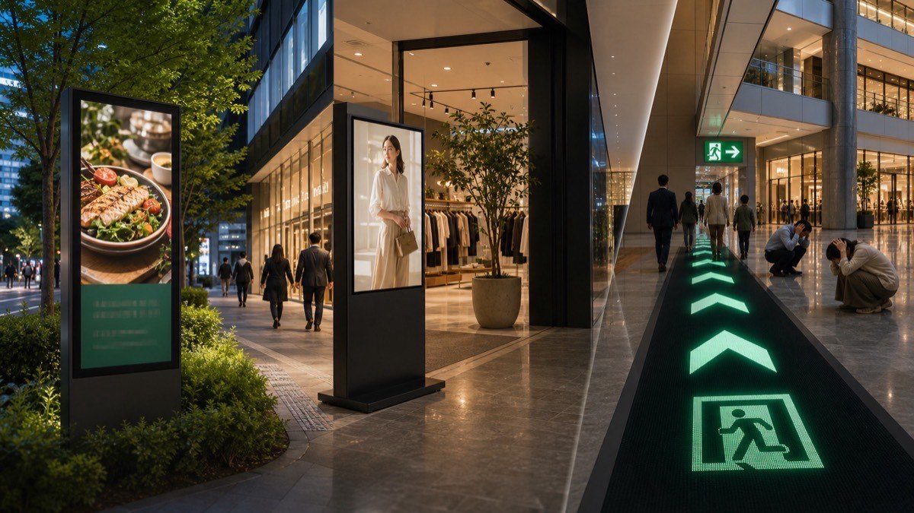
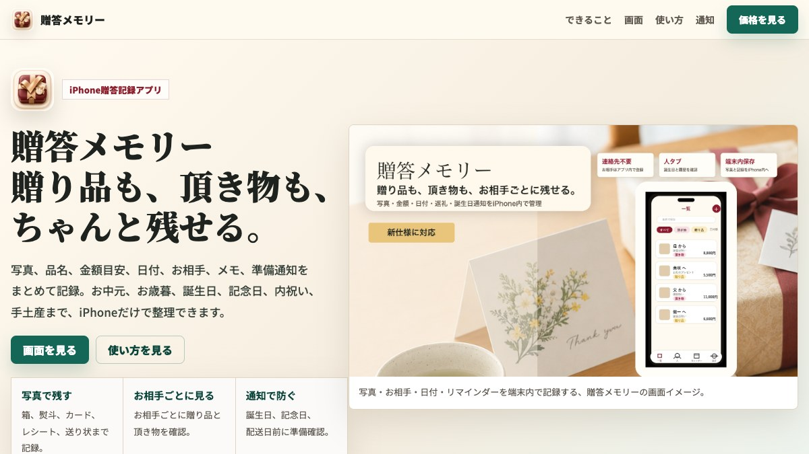
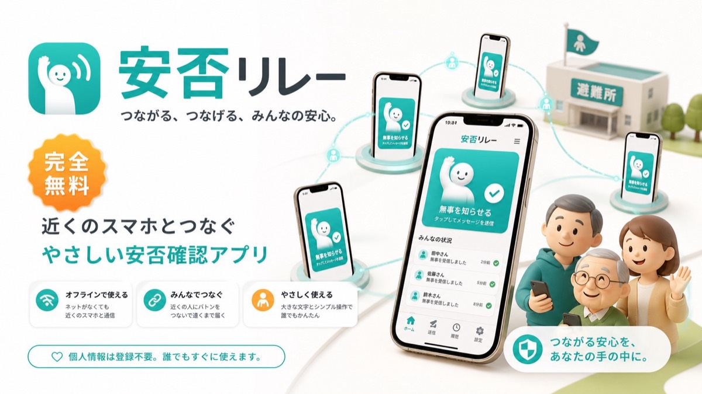
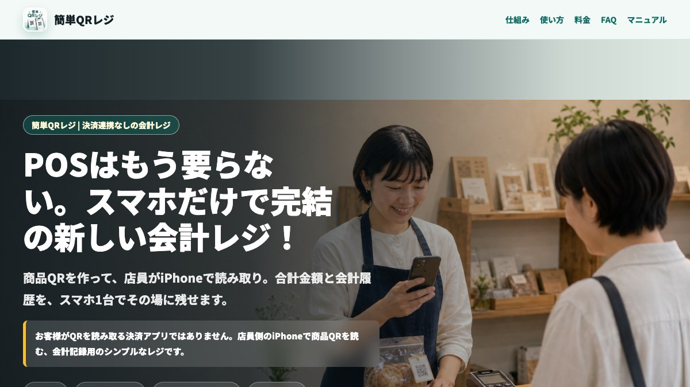

デジタルサイネージ
店舗、施設、屋外、床面LEDまで、空間で情報を伝える表示機器を扱います。
Three Business Fields
株式会社バンテックスは、AI、デジタルサイネージ、パイプベンダーを軸に、企画・制作・導入まで相談できる総合クリエイティブカンパニーです。

店舗、施設、屋外、床面LEDまで、空間で情報を伝える表示機器を扱います。
Recommended Services
店舗のSNS運用、広告やLPに使う動画制作、こだわりを絞ったHP制作など、すぐに業務で使いやすいサービスを掲載しています。
 オススメ 01
オススメ 01
LINEで写真を送るだけ。Instagram投稿までAIで自動化。
AIが投稿文とハッシュタグを作成し、決めた時間にInstagramへ自動投稿する店舗向けSNS運用サービスです。飲食店、美容室、サロンなど、投稿を継続したい店舗に向いています。
サービスを見る オススメ 02
オススメ 02
撮影コストを抑えながら、伝わる動画素材を用意する。
テキスト指示や画像1枚から、CM、SNS動画、企業PV、LP用ビジュアルまで制作します。撮影・モデル・スタジオを毎回用意しにくい事業者向けです。
サービスを見る オススメ 03
オススメ 03
こだわりを捨てれば、HP制作を3,980円（税込）で。
画像なし、1ページ超シンプル、URLなんでもOK。この3つで割り切れる個人・店舗向けに、まず公開するためのHP制作を短時間で用意します。
サービスを見るAI Service Library
SNS運用、動画制作、フォーム営業、公募情報、商圏分析、iPhoneアプリまで。BANTEXの全AIサービスをこちらでご覧いただけます。
LINEで写真を送るだけ。Instagram投稿まで自動化。
AIが投稿文とハッシュタグを作り、予約投稿までつなげる店舗向けSNS運用サービス。
オススメ広告・SNS向けのAI映像を、短時間で制作。
CM、SNS動画、企業PV、LP用ビジュアルなどをAI活用で制作します。
オススメ
こだわりないなら、HP制作を3,980円（税込）で。
画像なし、1ページ超シンプル、URLなんでもOKの条件で、まず公開できるHPを短時間で用意します。
毎朝配信会社URLや事業内容から、合う公募案件を探す。
全国の行政案件から、事業に合いそうな公募・入札情報を毎朝メールで届けます。
App Store公開中地域と業種を選ぶだけ。商圏分析をiPhoneで。
公的統計と行政APIをもとに、出店検討に使えるレポートを作成します。
営業自動化営業先HPを読み、問い合わせフォーム送信を支援。
会社別文面の作成、送信可否確認、証跡保存まで、営業作業を効率化します。
毎日自動投稿
HPのURLを登録するだけ。AIが毎日Xに自動投稿。
ホームページをAIが読み取り、毎日2回（朝・夜）自動でXに投稿。年730投稿を完全自動化。
人気
AI x LINEで顧客対応を自動化。
LINE友達登録だけでAIが24時間自動対応。管理画面ひとつで完結。
業務自動化
あなたの会社専用のAI社員を作成。
24時間働くAI社員が業務を自動化。御社専用にカスタマイズ。
オススメ
AI x エンタメで事業を爆速ローンチ。
事業計画・HP・ロゴ・SNS戦略を一括サポート。最短1週間で納品。
新サービス
エリア名を入れるだけで市場レポートを自動生成。
政府統計データをもとに相場・競合・潜在顧客をAI分析。全国1,892エリア対応。
新サービス
エリア名を入れるだけで商圏レポートを自動生成。
政府統計データをもとに人口・競合・消費力をAI分析。全国1,892エリア対応。
新サービス
エリアを選ぶだけで6士業の商圏レポートを一括生成。
政府統計データをもとに同業事務所数・競合密度・開業適性スコアをAI分析。全国1,892エリア対応。
App Store公開中車検、保証書、契約更新。忘れると困る期限をiPhone内で管理。
期限日、重要度、メモ、写真、ローカル通知をまとめて登録。アカウント不要で、期限情報を端末内に保存できます。
App Store公開中
贈り品も、頂き物も、写真付きでちゃんと残せる。
写真、品名、金額目安、日付、お相手、メモ、準備通知をiPhone内で記録。返礼忘れや次回準備を防ぎます。
App Store公開中
通信遮断でも、避難所を移動して安否情報を受け渡す。
同じアプリ同士で安否情報を自動リレー。ネット復旧後にまとめて届ける、完全無料のiPhone防災アプリ。
App Store公開中
POS不要。スマホだけで完結する小さなお店向け会計レジ。
店員が商品QRをiPhoneで読み取り、現金・PayPay・クレカなど通常の支払い方法のまま会計履歴を記録。
App Store公開中
クルーン皿と玉の動きを3Dで観察。
穴の配置、皿の形、摩擦、反発、玉の大きさなどを調整し、挙動を確認できるiPhone向け物理シミュレーター。
審査待ち
あなたに合う漢字を、方位から見つける。
生年月日と方位をもとに、今日の漢字・ラッキー方位・壁紙・タトゥー候補を提案するiPhoneアプリ。
デモ公開中
回答者だけ抽選参加できる、激アツアンケート。
LINE配信やイベント向けに、アンケート回答から抽選参加までを楽しく演出するWebアプリ。
無料Webツール材質・寸法・条件を入れると"どこまで曲げられるか"を試算。
曲げ可否・最小曲げ半径・肉厚減少・偏平率・スプリングバックを即計算。試作前の可否判断と材料ロス削減に。
Production Works
公開中のLPやコンテンツを掲載しています。サービス内容や地域の魅力を伝える制作もご相談ください。

キャラクター紹介とLINEボット導線を組み合わせたファン向け体験LP。
実績を見る
地域の歴史を、映像と読み物の両方で伝えるコンテンツLP。
実績を見る
設備・電気・AI・サイネージまで扱う企業のサービス内容を紹介。
実績を見る
AIがコード・音楽・キャラデザインまで制作したリズム天国風ワンボタンゲーム。
実績を見る
AIがコード・ドット絵・音楽まで制作した、どうぶつの森風ほのぼの散歩ゲーム。
実績を見る
パイプの曲げ可否をその場で試算するWebツールと、その紹介LP。
実績を見る
AIで構想した特注サイネージ形状を、BlenderとWeb 3Dで見せる提案LP。
実績を見る
公開座席図だけから7,634席の会場を3D再現。全席の見え方をブラウザで確認。
実績を見る店舗・開業に必要なHP、EC、SNS、動画制作を目的別に比較できます。BANTEXサービスをご紹介いただくパートナー制度も試験運用を開始しました。
ホームページ、ネットショップ、SNS、動画・デザインを、運用の手間まで含めて比較します。
目的から選ぶ対象サービスをご紹介いただき、成約・入金後に紹介報酬を受け取れる事前登録制の制度です。
紹介報酬と条件を見るCompany
| 社名 | 株式会社バンテックス BANTEX Inc. |
|---|---|
| 代表者 | 代表取締役 番野政彦 |
| 事業内容 | AI / デジタルサイネージ / パイプベンダー |
| 所在地 | 〒468-0015 愛知県名古屋市天白区原3丁目304番1号T&Lビル2A |
| TEL / FAX | TEL: 052-847-7500 FAX: 052-847-7501 |
| info@bantex.jp | |
| 適格事業者番号 | T2-1800-0111-7740 |
FAQ
愛知県名古屋市天白区を拠点に、AI、デジタルサイネージ、パイプベンダーの3部門を展開する総合クリエイティブカンパニーです。
ココトモSNS、X AI自動投稿、AIフォーム営業、公募ナビAI、Market Scope、AI映像制作、各種商圏レポートなどを提供しています。
メール、LINE、電話で相談できます。内容が固まっていない段階でも、課題の整理から一緒に対応します。
Contact
ご相談・お見積りはお気軽に
通常1営業日以内にご返信いたします。